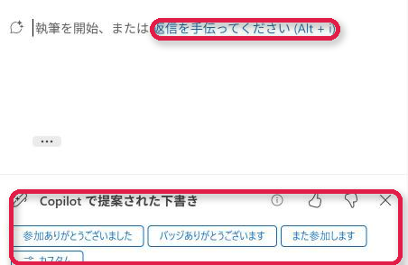
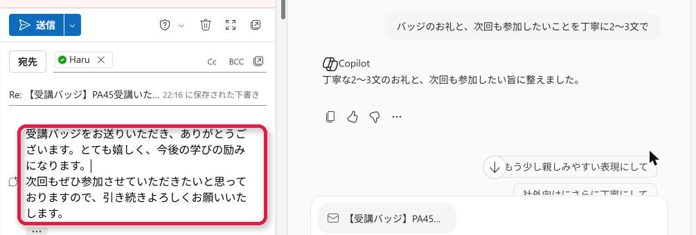

<!DOCTYPE html>
<html lang="ja">
<head>
<meta charset="UTF-8">
<meta name="viewport" content="width=1280, initial-scale=1">
<title>M365 Copilot Vol.14-2 返信の下書き</title>
<link rel="preconnect" href="https://fonts.googleapis.com">
<link rel="preconnect" href="https://fonts.gstatic.com" crossorigin>
<link href="https://fonts.googleapis.com/css2?family=Noto+Sans+JP:wght@400;500;700;900&family=Roboto+Mono:wght@500;700&display=swap" rel="stylesheet">
<link rel="stylesheet" href="../_base/mc-base.css">
<style>

  .shotcol{flex:0 0 438px;display:flex;flex-direction:column;gap:7px;min-height:0;}
  .shots{flex:1;min-height:0;display:flex;flex-direction:column;gap:8px;}
  .shot{min-height:0;min-width:0;background:#fff;border:2.5px solid var(--mc-line);border-radius:12px;overflow:hidden;display:flex;align-items:center;justify-content:center;box-shadow:0 4px 10px rgba(15,60,55,.15);}
  .shot img{width:100%;height:100%;object-fit:contain;display:block;}
  .real{flex:0 0 auto;align-self:flex-start;font-size:14px;font-weight:900;color:#fff;background:var(--mc);border-radius:999px;padding:2px 12px;}
  .steps{flex:1;min-width:0;display:flex;flex-direction:column;gap:8px;}
  .st{flex:1;min-height:0;display:flex;gap:10px;align-items:center;background:#fff;border:2.5px solid var(--mc-line);border-radius:12px;padding:8px 12px;}
  .st .n{flex:0 0 auto;width:34px;height:34px;border-radius:9px;color:#fff;display:flex;align-items:center;justify-content:center;font-weight:900;font-size:20px;background:var(--mc);}
  .st .t{font-size:18.5px;font-weight:900;color:#1B2A44;line-height:1.36;}
  .st .t b{color:var(--orange,#EA580C);}
  .st .t small{display:block;font-size:15.5px;font-weight:700;color:#4B5563;line-height:1.38;margin-top:2px;}
  .st.hint{background:#FFFBEB;border-color:#F59E0B;}
  .st.hint .n{background:linear-gradient(180deg,#FBBF24,#D97706);padding:5px;}
  .warnbar .ws span b{color:#B91C1C;}
  /* フロー図（PA） */
  .flow{flex:1;min-height:0;display:flex;flex-direction:column;gap:0;background:#F8FAFC;border:2.5px solid var(--mc-line);border-radius:12px;padding:10px 14px;}
  .act{flex:1;min-height:0;display:flex;flex-direction:column;justify-content:center;background:#fff;border:1.5px solid #D1D5DB;border-left:6px solid var(--c,#2563EB);border-radius:9px;padding:4px 12px;box-shadow:0 2px 5px rgba(0,0,0,.07);}
  .act .ah{display:flex;align-items:center;gap:9px;font-size:16.5px;font-weight:900;color:#1F2937;}
  .act .ah .k{font-size:13px;font-weight:900;color:#fff;background:var(--c,#2563EB);border-radius:5px;padding:1px 7px;}
  .act .pr{font-size:15px;font-weight:700;color:#374151;line-height:1.35;margin-top:2px;font-family:"Roboto Mono","Noto Sans JP",monospace;}
  .act .pr b{color:#B45309;background:#FEF3C7;border-radius:4px;padding:0 4px;}
  .act.br{border-left-color:#7C3AED;}
  .cn{flex:0 0 14px;align-self:center;width:3px;background:#94A3B8;}

</style>
</head>
<body>
<div id="slide"></div>
<script>
const A="../../pptx/_assets/";
const svgw=(p,sw)=>`<svg class="ic" viewBox="0 0 24 24" fill="none" stroke="currentColor" stroke-width="${sw||2.4}" stroke-linecap="round" stroke-linejoin="round">${p}</svg>`;
const P={x:'<path d="M6 6l12 12M18 6L6 18"/>',ok:'<path d="M5 12l5 5 9-10"/>',arrow:'<path d="M4 12h15M13 6l6 6-6 6"/>',
  warn:'<path d="M12 3l10 18H2z"/><path d="M12 10v5M12 18v.5"/>',bulb:'<path d="M9 18h6M10 21h4"/><path d="M12 3a6 6 0 0 0-4 10.5c.7.7 1 1.5 1 2.5h6c0-1 .3-1.8 1-2.5A6 6 0 0 0 12 3z"/>',
  q:'<circle cx="12" cy="12" r="9"/><path d="M9.5 9.5a2.5 2.5 0 0 1 5 0c0 1.7-2.5 2-2.5 4M12 17v.5"/>'};
const CPI=(w)=>``;
const MS=(n,w)=>``;
document.getElementById('slide').innerHTML=`
  <div class="titlebar">
    <div class="pills"><div class="vol-pill"><small>M365 Copilot</small>Vol.14-2</div><div class="lic-pill paid">M365 Copilot ライセンスが要る</div></div>
    
    <div class="title-text">実際の画面：返信を開くと<br><span class="hl">「返信を手伝ってください」と候補</span></div>
    <div class="title-apps"><span class="pl">＋</span></div>
    
  </div>
  <div class="concl">
    <div class="chip app">${CPI(34)}</div>
    <div class="txt">本文の入口と、下の<b>「Copilot で提案された下書き」</b>の候補から始められます。<br>右に Copilot が開き、言い方を直す候補も出ます</div>
  </div>
  <div class="stage">
    <div class="shotcol">
      <span class="real">実際の画面（2026年10月）</span>
      <div class="shots"><div class="shot" style="flex:0.650 1 0"></div><div class="shot" style="flex:0.338 1 0"></div></div>
    </div>
    <div class="steps">
      <div class="st"><span class="n">1</span><div class="t">返信を開く<small>本文に「返信を手伝ってください (Alt + i)」</small></div></div>
      <div class="st"><span class="n">2</span><div class="t">候補のボタンからも選べる<small>参加ありがとうございました／また参加します／カスタム</small></div></div>
      <div class="st"><span class="n">3</span><div class="t">伝えたいことを1行<small>本文に下書きが入る</small></div></div>
      <div class="st hint"><span class="n">${svgw(P.q,2.6)}</span><div class="t">送信は自分で押す<small>右の候補「もう少し親しみやすい表現にして」で直せる</small></div></div>
    </div>
  </div>
  <div class="warnbar">
    <span class="na" style="width:30px;height:30px;color:#C2410C">${svgw(P.warn,2.4)}</span>
    <span class="wl">使う前に確認</span>
    <span class="ws"><span>宛先と内容を読んでから送る</span><span>撮影時は「Outlook draft assistant」が使われた</span></span>
  </div>
  <div class="src">出典：Outlook の Copilot／撮影は 2026年10月の Microsoft 365 Copilot（Premium）環境・人名は架空</div>
`;
</script>
</body>
</html>
